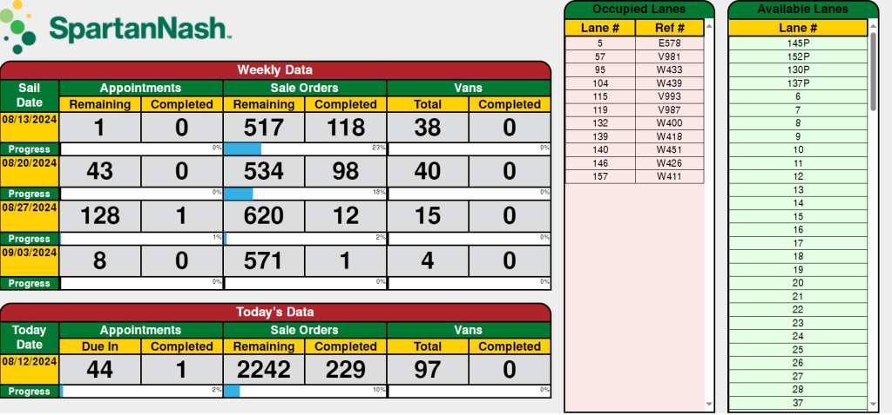
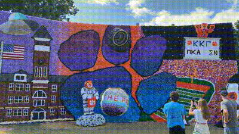
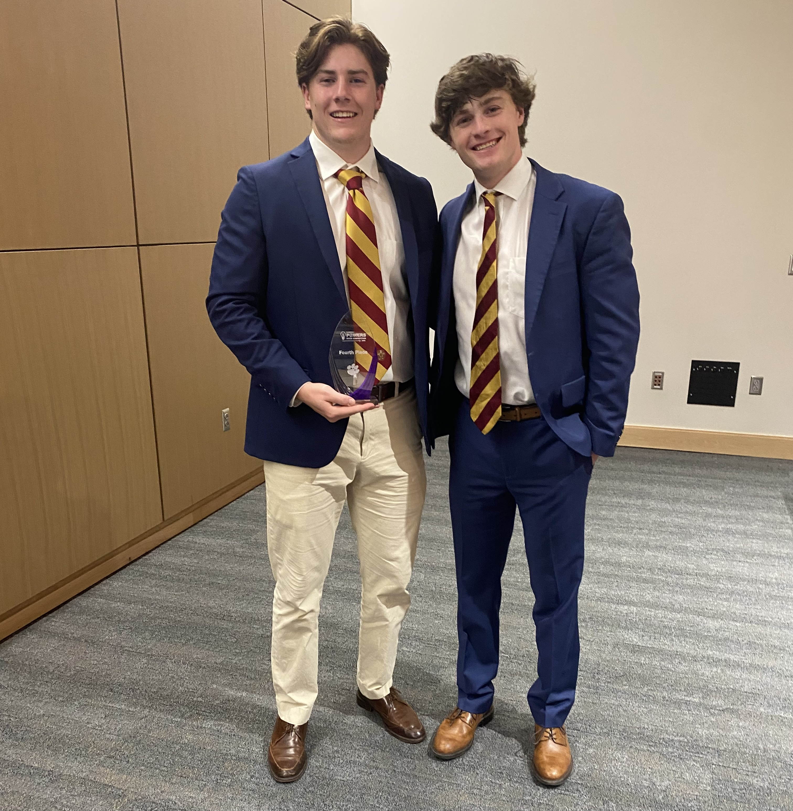

Export Warehouse Dashboard

During my 12-week summer internship for SpartanNash, I worked as an application developer
to build a dashboard that tracks the progress of the export warehouse. This cross-dock
warehouse is responsible for the shipment of all groceries delivered to overseas commissaries.
The whole process was a learning experience, as I had to learn a ton about supply chain,
logistics, front-end and back-end web technologies. I have gained many skills from this
internship and will continue as an Intern II through my last year of school.
Clemson Homecoming Float

As the Homecoming float director for my fraternity, I am in charge of planning, budgeting,
and building our massive floats. There is so much more than what meets the eye when organizing
a project of this scale. It is a five-day event in the middle of campus for the entire school
to see. The best part about the float is our moving parts, which require a team of STEM majors
to ensure they work and, most importantly, are safe. We have received second place for the past
three years and the safest float for the last 2. As the returning float director, I aim to
finally take home first place and our third safest float award.
SnoreEase

One of the most unique projects I have ever worked on was for a pitch competition hosted by the
SPIRO Institute for Entrepreneurship Leadership. My good friend, Carson Scott (pictured), enquired
about my help developing his bizarre idea to alleviate snoring. Our research suggested that during
sleep, the brain can be classically conditioned. I built a prototye with an Arduino board, servo
motor, and a sensor to be used in our initial tests. It was exciting to create something that has
the chance to change lives and pitch it to actual investors. We were awarded fourth place and a
research grant to continue research and testing.